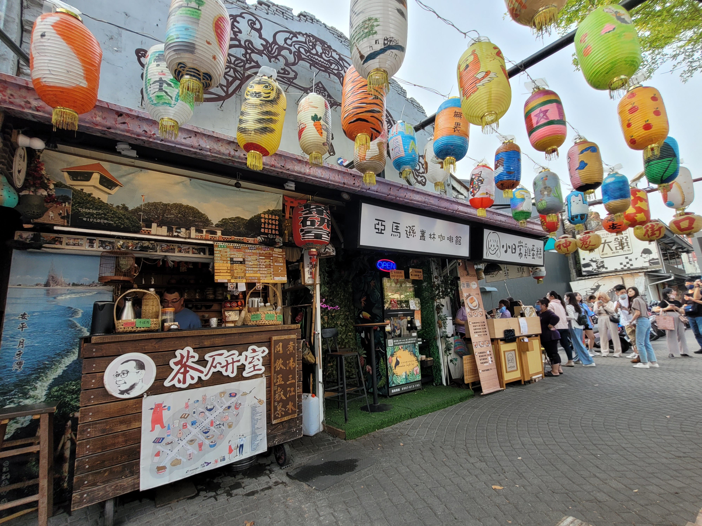

Go Back
Tainan

Tainan is Taiwan's oldest city and former capital. I visited Tainan for 3 days in April 2023. I found the city to have lots of character, history, food and action. It had a denser population density than the other cities I visitied in Taiwan and did remind me a lot of some Southeast Asian cities. There is lots to do and see in Tainan and I'd consider it a must visit destination in Taiwan. The central district is full of historic sights like the Confucius Temple and the Chihkan Tower. There are food streets and night markets throughout the city that fill up at night time with loads of hungry people. It also seemed like it had a younger population than other cities such as Taipei. Tainan can easily be reached by taking a train from any other major city in Taiwan. The high speed rail comes through Tainan from Taipei and you can also take the slower (yet still fast) train from Hualien or other east coast places. Here is my guide to this fantastic city!
The Central District holds some of Tainan's most historic and popular sights for tourists such as the Confucius Temple, Chihkan Tower and Shennong Street. The Confucius Temple was built in 1665 and was used as an education facility. The Chihkan Tower was also built in the 17th century by Dutch colonialists and was a former outpost in the colonial era. Shennong Street was mostly a touristy street with little shops that sold souvenirs, tea and food. It's particularly charming as there are hundreds of colourful lanterns hanging on the street and the alleys that branch off it. There is also the Yongle Market just a block or two away from Shennong street where you can try some local street food. This market was open during the day too so it's not only a night market like many other ones in Taiwan. I find the central district to be quite walkable and was easily able to see all these sights within a few hours just walking around. Tainan doesn't have a metro system like Taipei or Kaohsiung but they do have a pretty sophisticated bus system. This is also a good alternative of how to get around. Of course there is Uber as well.
Eternal Golden Fort is a fortress right on the coast of Tainan. The fortress was built in 1874 and completed on 1876 by a famous Qing official Shen Baozhen in order to safeguard the coast and to defend the island against Japanese invasions. This military facility saw its first action in the Sino-French war of 1884. When Taiwan was ceded to the Empire of Japan by the Qing in 1895, the Taiwanese people fought under the Republic of Formosa banner against the invading Japanese battleships from this fortress. Under Japanese control this military facility lost its value. Its value was completely lost when during the Russo-Japanese War the imperial Japanese government sold some of the fort's cannons.
Another area with lots of history is the Anping Historic Area. It's just a short walk (about 30 minutes) away from the Eternal Golden Fort. Much like the Central District of Tainan this area is full of beautiful temples, a large night market and different historic sights such as the Anping Treehouse and Zeelandia Fort. I recommend spending an afternoon visiting the Golden Eternal Fort then walking up to this area and exploring it. The walk itself from the Golden Eternal Fort is scenic and offers great views from the city port and pieces of art like the whale sculpture pictured. Anping Old Street which runs next to the fort is where you'll find the bustling night market. You should definitely visit this area when in Tainan.
Like most Taiwanese cities there are tons of food streets and markets throughout the city. We ate most of our meals on Yule Street because we were staying right next to it. This street has a lot of street food vendors and restaurants. We enjoyed dishes like beef noodle soup, takoyaki, chicken cutlet, seafood soup, ramen, cream pancakes, curries, dumplings, milk tea etc.. Some notable markets include Da Dong Night Market, Yongle Market and the Anping Old Street Market. You'll find a massive variety of delicious food. The night markets shouldn't be missed while visiting Taiwan in general!
Tainan is split into different districts. Each district is fairly walkable however the distances between them can be quite large so I'd recommend taking buses in Tainan. I found google maps to be quite useful and accurate for telling bus schedules and routes. Just input your destination and go to the bus stop that the app tells you. I also recommend getting an Easy Card in Taiwan so when you board public transport like buses or trains you just scan your card which has money preloaded onto it. Buses don't give change as well so it's far easier to just use this card. Watch out for traffic while walking! Compared to places in Southeast Asia the traffic isn't too hectic, but for many North American drivers the traffic might seem a bit chaotic at first.